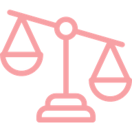

Welcome

Internal Team or External Consultants?
Answer 13 quick questions about your initiative. It takes about 3 minutes. You'll get:
- A clear recommendation, from internal team to external consultants
- The specific factors driving it
- Practical next steps
Your answers stay in your browser. Nothing you enter is stored or sent anywhere.
What Matters Most?
Last step. Choose a focus, and the factors that matter most to you will count double in your result.